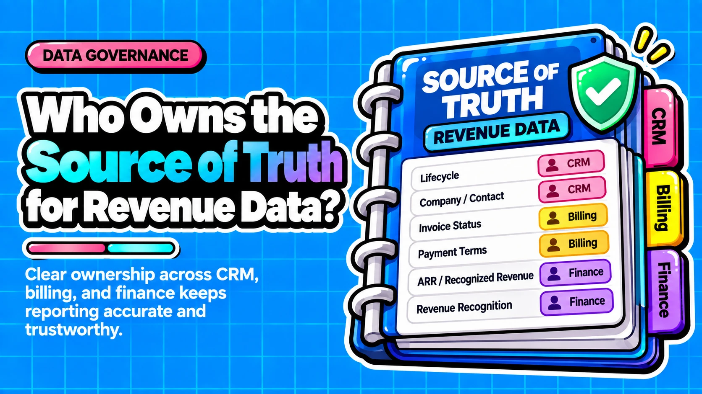

Source of Truth for Revenue Data: Who Owns What Across CRM, Billing and Finance

Direct answer: No single system should be the source of truth for revenue, because bookings, billings, recognized revenue and ARR are different numbers. Ownership has to be assigned per data element and per metric: the CRM owns commitment and pipeline data, billing owns terms, subscription amounts and invoices, and finance owns recognized and board-reported revenue. This article gives the definitions, a default ownership map, a register template and the controls that enforce it.
- Assign ownership per element. Each revenue field and metric needs one accountable owner and one authoritative system, not one system for everything.
- Separate capture from reporting. Capture, interpretation and reporting are different jobs, and each revenue question maps to one of them.
- Sync rules enforce ownership. Sync direction carries out an ownership decision; it cannot make that decision for you.
- Reconcile on a schedule. A recurring CRM-to-billing-to-cash check separates definition differences from real control gaps.
Questions this article answers
- What should be the source of truth for revenue data?
- What is the difference between a system of record and a source of truth?
- Why do CRM, billing and finance report different revenue for the same deal?
- What is each system best at, and what does each get wrong as the source?
- How do you decide which system owns each revenue element?
- Who owns ARR and the board revenue number?
- How do you assign owners and document the ownership model?
- How do you enforce ownership with sync rules, stage gates and permissions?
- What are the common failure modes, and how do you reconcile them?
- How does source-of-truth ownership connect to field governance, validation and duplicates?
- What should you do first?
- Plus 4 FAQs answered below
What should be the source of truth for revenue data?
Do not name one system the source of truth for revenue; name one accountable owner and one authoritative system for each revenue element and metric.
A practitioner source recommends that the CRM be the workflow system for sales while finance still owns the final revenue value (Rework). Our default map extends that logic to every element. It is our recommendation, a synthesis of sourced practices, and not a published standard.
| Data category | Authoritative layer | Why |
|---|---|---|
| Pipeline and commitment data | CRM | Sales creates and works these records |
| Contract and subscription terms | Contract or billing system | Terms define what is owed |
| Invoices and subscription amounts | Billing | Billing records what customers are charged |
| Recognized and board revenue | Finance/ERP | Recognition follows accounting rules finance owns |
| ARR and cross-system metrics | Governed derived layer | One definition, with finance sign-off |
The sources we reviewed point the same way on five points: revenue is several different numbers; the CRM captures commercial intent while billing captures what is charged and finance owns recognition; authority is assigned per field and metric rather than per tool; integrations need explicit direction and conflict rules; and metric definitions should be defined once, centrally (Rework, Discern, Vantage Point, dbt Labs).
What is the difference between a system of record and a source of truth?
Here, a system of record is the application that creates and controls a data element; a source-of-truth model is the rulebook for which system wins each question.
Sources use these terms inconsistently. One guide puts the warehouse or BI layer in the source-of-truth role and keeps operational systems such as the CRM and ERP as systems of record for capture and control (Digna). Others treat the terms as synonyms. A practitioner model keeps them apart: the system of record is where data lives, and the source-of-truth model states which system wins per business question (Rework). Designating a system of record is an organizational agreement about which version counts when systems disagree, not a property of a tool (Outsales.ai). We use the split and never treat the terms as interchangeable.
- System of record: the application where a data element is created and controlled. Example: opportunity owner lives in the CRM.
- Source-of-truth model: the rulebook stating which system wins for a given question. Example: current subscription amount comes from the billing record, even if the CRM amount differs.
- Finance-approved report: the output leadership reads. Example: the board revenue number.
These definitions imply three separate jobs: capture belongs to the system of record, interpretation belongs to a derived or semantic layer that applies approved definitions, and reporting belongs to a finance-approved report. We also recommend documenting, for each revenue question, the workflow system (where people work), the truth system (which value wins) and the reporting layer (where leadership reads), as the same practitioner source suggests. Property-level definitions are covered in Property and field governance.
Why do CRM, billing and finance report different revenue for the same deal?
Bookings, billings, recognized revenue and ARR measure different points in the revenue lifecycle, so each system can be correct for its own layer.
CRM and finance numbers diverge mainly because they measure different points: closed-won commitment, invoiced amount and recognized revenue (MXM Revenue). Contract amendments after close, a close date that differs from service start, and CRM records missing billing frequency or term dates widen the gap. Recognized revenue follows the FASB ASC 606 core principle: revenue is recognized to depict the transfer of promised goods or services in the amount the entity expects to be entitled to, through a five-step model (FASB, Grant Thornton). That is an accounting event, not a CRM stage change.
The figures below are source illustrations, not company data. The first three rows use a $12,000 prepaid annual subscription (EightX); the last two use a $300K three-year deal (Orb).
| Layer | What it records | Source example |
|---|---|---|
| Bookings (CRM) | Signed contract value | $12,000 at signing |
| Billings (billing system) | Invoiced amount | $12,000 at signing |
| Recognized revenue (ledger) | Value earned under ASC 606 | $1,000 per month |
| TCV bookings (CRM) | Total signed value, multi-year | $300K |
| ARR (derived layer) | Annualized recurring run-rate | $100K |
ARR is MRR x 12. It is not revenue or billings, and a one-time setup fee does not belong in it (Orb). ARR and MRR are non-GAAP operating metrics, so the company must define them itself.
Accounting treatment belongs to finance and auditors. RevOps should not redefine recognized revenue in the CRM, and when a CRM figure disagrees with finance, check definition and timing before looking for an error.
What is each system best at, and what does each get wrong as the source?
The CRM is best at commitment and pipeline data, billing at actual charges, ERP or the general ledger at recognized revenue, and the warehouse at cross-system interpretation.
Each system fails when asked to do another's job. The CRM usually captures the intended commercial agreement, while the billing system captures what customers are actually charged, and neither is automatically correct for ARR. Incomplete CRM records let ARR drift, and billing data alone can absorb credits, cancellations and one-time adjustments (Discern). The warehouse needs separate care. One source assigns the warehouse or BI layer the cross-system source-of-truth role (Digna), but a warehouse inherits the quality of the systems feeding it. It helps only after definitions and ownership are decided upstream.
| System | Best at | Wrong as "the" source | Role in the model |
|---|---|---|---|
| CRM | Intended agreement and pipeline | Drifts when terms or dates are missing | Owns commitment data |
| Billing | What customers are charged | Absorbs credits and one-time adjustments | Owns terms, amounts, invoices |
| ERP/GL | Recognized revenue | Lacks pipeline and commercial context | Owns recognized and board revenue |
| Warehouse | Joining data across systems | Inherits upstream quality | Hosts governed derived metrics |
The table describes system categories, not specific products, and we do not rank them. Each owns different questions.
How do you decide which system owns each revenue element?
Give authority to the system closest to the event that creates the fact and equipped with controls to validate it; downstream systems consume rather than re-enter.
This rule is our interpretation, a synthesis of sourced practices, and no source states it as a standard. It follows from how facts originate: sales creates the opportunity, the billing system creates the invoice, and the ledger creates the recognition entry. The system closest to the event holds the freshest context and can reject bad input when validation is configured. Downstream systems should consume the value rather than re-enter or reinterpret it, because re-entry creates a second version that someone must reconcile.
| Element | Authoritative system | Reason |
|---|---|---|
| Opportunity amount | CRM | Records the commitment, validated at closed-won |
| Opportunity owner | CRM | Sales assigns and works the deal |
| Lead source | CRM | Captured in the commercial record at first touch |
| Contract terms | Contract or billing system | Terms define what is owed |
| Subscription amount | Billing | Reflects what customers are charged |
| Invoice | Billing | Billing creates the invoice |
| Recognized revenue | Finance/ERP | The ledger creates the recognition entry |
The CRM can serve as the working revenue source when no billing system or ERP exists. This is a conditional recommendation: it needs validation gates at closed-won and a periodic reconcile to bank or accounting records, a check MXM Revenue describes for B2B SaaS. Without those two controls, the CRM holds intentions rather than revenue.
Who owns ARR and the board revenue number?
ARR usually belongs in a governed derived layer whose definition finance approves, while the board number comes from a finance-approved report and finance owns the final revenue value.
ARR belongs in a derived layer because it combines inputs from several systems under one definition. We recommend finance approve that definition, since ARR is a non-GAAP metric the company defines itself (Orb). The inputs can come from the CRM or from billing, and neither is automatically correct (Discern). Sources list common ARR errors: recurring and one-time revenue not separated, missing or unreliable contract dates, pricing changes not preserved, overlapping inconsistent CRM and billing records, and undefined treatment of renewals, win-backs, free periods and usage. Settle each in the definition before choosing the feed.
Choose the ARR feed by answering these in order. The tree is our recommendation, built on the Discern analysis:
- Contract structure: Are contracts structured with reliable start and end dates, or usage-based and often amended?
- Pricing stability: Are prices relatively stable, or do they change mid-term?
- Data discipline: Does the GTM team maintain contract and opportunity data to a standard finance accepts?
- Source: Structured contracts, stable pricing and disciplined data support a CRM-fed ARR. Usage-based or amendment-heavy pricing supports a billing-fed ARR, with credits and one-time adjustments separated out.
A hypothetical company selling fixed-term annual contracts at stable prices lands on the CRM branch. A hypothetical company with usage-based pricing and frequent mid-term amendments lands on the billing branch.
The board and investor number comes from a finance-approved report, and the CRM stays the sales workflow system (Rework). Every board figure needs a named approver and a stated definition. Validation rules for the inputs are covered in Data validation and standardization.
How do you assign owners and document the ownership model?
Name one accountable owner and one steward for each element and metric, and record them in a register with an authoritative system, allowed writers, sync rule and reconciliation check.
Under DAMA-DMBOK-style governance, as secondary sources summarize it, the data owner is accountable for a domain (policy, approvals, outcome), while the data steward handles day-to-day quality, definitions and issue resolution (Soda, OvalEdge). A governance council resolves cross-domain conflicts. Blurring owner and steward is cited as a common reason governance programs stall. Revenue questions cross sales, billing and finance, so we recommend one named owner per row and titles that fit your organization.
The register has eight fields: element or metric, definition, authoritative system, owner, steward, allowed writers, sync direction and rule, and reconciliation check. Two hypothetical entries show the shape:
- ARR (hypothetical): definition is annualized recurring contract value excluding one-time fees, approved by finance. System: governed derived layer. Owner: RevOps lead. Steward: analytics owner. Writers: none, computed from inputs. Sync: read-only downstream. Check: compare against invoiced recurring amounts.
- Opportunity owner (hypothetical): definition is the sales user accountable for the deal. System: CRM. Owner: sales operations lead. Steward: CRM administrator. Writers: sales managers and admins. Sync: one-way out of the CRM. Check: scan for closed-won deals without an owner.
Store each metric definition once. A semantic layer such as dbt's lets teams define metrics centrally and serve them to any integrated analytics tool so answers stay consistent (dbt Labs). It is an option, not a requirement; a finance-approved report can also hold the definition. We recommend change control either way: finance approves the change, the definition carries a version note, and every consumer, including dashboards and AI agents, is told.
How do you enforce ownership with sync rules, stage gates and permissions?
Decide which system is authoritative for each field first, then set sync direction and conflict rules to match, because sync direction enforces ownership but does not decide it.
Integration practitioners advise choosing an authoritative system per field before turning sync on, reserving two-way sync for fields both teams genuinely maintain, and naming a tiebreaker (Vantage Point). HubSpot's official Salesforce integration offers four rules per mapped property: Prefer Salesforce unless blank, Always use Salesforce, Two-way (most recent value overwrites), and Don't sync (HubSpot). These rules are time-sensitive, so check current HubSpot documentation. We make no claims about other CRMs or billing tools.
| Ownership scenario | Sync rule | Companion control |
|---|---|---|
| Salesforce governs the field; HubSpot only reads | Always use Salesforce | Restrict edit rights in HubSpot |
| Both teams genuinely maintain the field | Two-way, with named tiebreaker | Monitor conflicts and loops |
| Authority shifts during the lifecycle | Avoid Prefer unless blank | Stage gate and billing handoff trigger |
Under Prefer Salesforce unless blank, HubSpot passes a value only when Salesforce has none, and an existing Salesforce value overwrites HubSpot (HubSpot). In our reading, an existing Salesforce value always wins, which is wrong for fields whose authority moves to another system during the lifecycle. Two-way sync lets the most recent value win, and deletions propagate under the first three rules. Setting "Always use" on a field the system does not govern hardcodes the wrong owner.
Consider a hypothetical billing frequency field that sales proposes during negotiation and billing governs after signature. A rule that lets an existing Salesforce value overwrite HubSpot would keep the negotiation-stage entry if sales entered it there. We recommend this closed-won gate before a deal counts as booked:
- ☐ Signature recorded
- ☐ Billing frequency set
- ☐ Start and end dates present
- ☐ Contracting entity identified
What are the common failure modes, and how do you reconcile them?
Common failures are closed-won before signature, missing contract dates, sync overwrites, manual rekeying and duplicate definitions, and a recurring CRM-to-billing-to-cash reconciliation exposes them.
Each failure violates an ownership rule, which is why we pair them below. Reconciliation works as a standing control, not a one-time cleanup. One source describes any deal that cannot be traced across CRM, billing and cash records as a control gap rather than a reporting problem, and lists common causes: unsigned deals marked won, delayed billing starts, discount drift, post-close credits and collection lag (MXM Revenue). We do not cite a failure frequency, because the research does not measure one.
- Closed-won before signature: breaks the rule that the CRM owns validated commitments. Fix: gate the stage on a recorded signature.
- Missing contract dates: leaves ARR and billing starts undefined (Discern). Fix: require dates at closed-won.
- Sync overwrites: a non-owning system changes a governed field. Fix: match sync direction to the register.
- Manual rekeying: downstream users re-enter values they should consume. Fix: automate the handoff and remove write access.
- Duplicate definitions: two reports define ARR differently. Fix: one approved definition, versioned.
Run the reconciliation generically:
- Pull the deals closed in the review period from the CRM.
- Match each to billing on signature date, billing start and invoice amount, then to first cash receipt.
- Classify each difference as a documented timing or definition difference, or as a control gap because the deal cannot be traced.
- Route every gap to the owner named in the register.
- Fix the cause at the source system, not in the report.
Set the cadence and tolerance to fit your billing cycle; they are our judgment, not a sourced standard.
How does source-of-truth ownership connect to field governance, validation and duplicates?
Ownership decides who wins; field governance defines each property, validation enforces correctness at entry, and duplicate prevention stops records from competing; all three depend on the ownership register.
Without a named owner per field, nobody can say who approves a property definition, which values are valid, or which of two duplicate records survives. That is why we recommend building in dependency order. Ownership comes first because the other three practices take their rules from it. Field governance then writes the definitions, naming and edit rights that the register implies. Validation turns those definitions into required fields and formats at stage gates. Duplicate prevention comes last because one record per entity is what makes any ownership assignment unambiguous.
- Property and field governance: covers property definitions, naming and edit rights, which follow the owners and writers in your register.
- Data validation and standardization: covers required fields and formats at stage gates, which enforce the closed-won rules above.
- Duplicate prevention: covers keeping one record per entity, so ownership attaches to a single record.
What should you do first?
Adopt one decision rule: authority belongs to the system closest to the event that creates the fact, with one named owner per element and metric.
Treat the model in this article as a recommendation to adapt to your contract structure, not a standard. Companies with usage-based pricing, multiple entities or frequent amendments will assign some rows differently. Accounting treatment belongs to finance and auditors, and ARR and MRR remain non-GAAP metrics your company defines. Start with the controls that remove the most ambiguity at the lowest cost, in this order:
- ☐ Agree written definitions of bookings, billings, recognized revenue and ARR with finance
- ☐ List every revenue element and metric, then assign an authoritative system, owner and steward
- ☐ Add the closed-won validation gate
- ☐ Set sync direction per field to match the register, and recheck HubSpot documentation if you use it
- ☐ Schedule the recurring CRM-to-billing-to-cash reconciliation
- ☐ Name the approver of the board number and set change control for metric definitions
If you already have a register and sync rules and want them checked against this model, Muvap's CRM architecture and data governance work covers that. To continue, read Property and field governance, then Data validation and standardization, then Duplicate prevention.
Frequently asked questions
Is the data warehouse the source of truth for revenue?
Not by itself. Sources disagree on the label: some name the warehouse or BI layer the source of truth, others treat the term as a synonym for system of record. A warehouse or semantic layer suits cross-system interpretation, such as ARR under a finance-approved definition, but it inherits upstream data quality and does not own invoices or recognized revenue. Capture, interpretation and reporting are three separate jobs.
Can the CRM be the source of truth for revenue at an early-stage company?
Yes, as a working source, when no billing system or ERP exists. This is a conditional recommendation: require validated fields at closed-won (signature, billing frequency, start and end dates) and reconcile to bank or accounting records on a regular schedule. Once billing and a ledger exist, move invoices and recognized revenue to them and keep the CRM for commitment data.
Does a mismatch between CRM and finance mean someone made an error?
Often not. The CRM, billing and finance each measure a different point in the revenue lifecycle, so each can be correct for its own layer. Check definitions and timing first: close date versus service start, amendments after close, and missing billing dates. A deal that cannot be traced across CRM, billing and cash records is different; treat it as a control gap.
Who should approve the revenue number that goes to the board?
Finance owns the final revenue value and the board report. RevOps contributes definitions for operating metrics such as ARR, and finance signs off on them. Each number sent to the board needs a named approver and a written definition. ARR is a non-GAAP metric the company defines itself, so the approval step protects consistency over time.
Sources
- Rework: Revenue Operations System of Record
- Digna: System of Record vs Source of Truth, A Practical Guide
- Outsales.ai: System of Record, Definition and vs System of Action
- Discern: CRM vs Billing System for ARR
- Soda: Data Steward vs Data Owner
- OvalEdge: The DAMA-DMBOK Data Governance Framework in 6 Steps
- HubSpot Knowledge Base: Map HubSpot properties to Salesforce fields
- Vantage Point: HubSpot-Salesforce Integration, Sync Rules, Directions, and Field Mappings
- EightX: Bookings vs billings vs revenue on a prepaid subscription
- FASB: Post-Implementation Review, Revenue from Contracts with Customers (Topic 606)
- Grant Thornton: Revenue from Contracts with Customers, ASC 606 Updated
- MXM Revenue: CRM-to-Bank Reconciliation for B2B SaaS Revenue
- dbt Labs: dbt Semantic Layer FAQs
- Orb: SaaS revenue recognition, ASC 606 for SaaS companies
Want your revenue data ownership mapped and enforced across your CRM, billing and finance stack?
Contact →